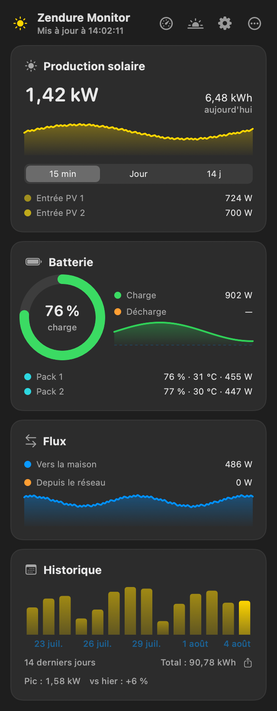
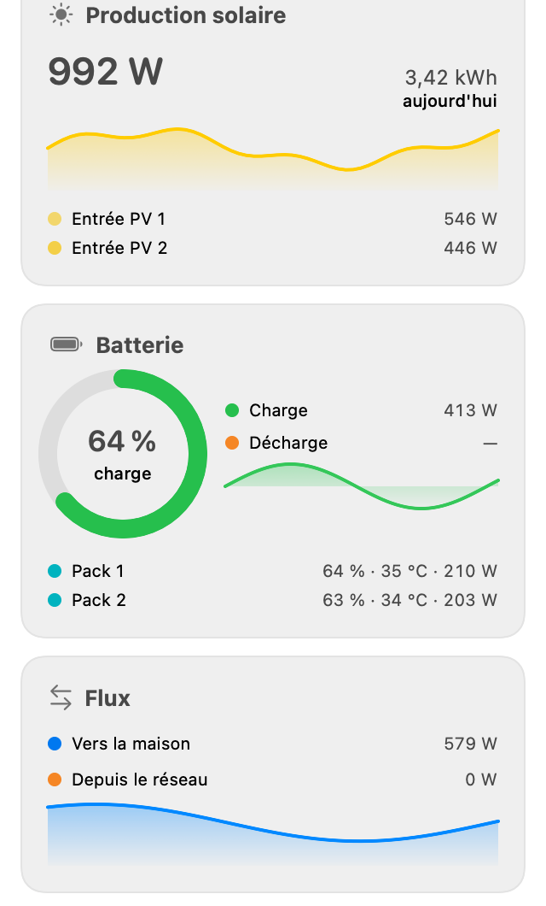

A tiny native macOS menu bar app showing the live solar production of a Zendure SolarFlow battery — 100% local, no Zendure cloud account, no MQTT broker, no credentials.
Free & open source (MIT) · macOS 14+ · signed & notarized DMG · Sparkle auto-updates · 100% local

Everything the SolarFlow reports on your LAN, one click away — and a few things you can send back to it.
Your current solar production sits permanently in the menu bar, polled every 5 seconds. Prefer something else? Show the battery percentage, the power sent to the home — or just the icon.
Battery state of charge, charge and discharge power, output to the home, grid input, per-MPPT PV input, today's solar energy, and per-pack SOC and temperature.
Added in 1.3: a small and a medium widget for Notification Center and the desktop, so the current production stays visible even with the panel closed.
A dedicated tab to change the AC mode and the output and charge limits of the battery, written straight to the device over the local API.
Export the recorded production history to CSV and take it to a spreadsheet — daily kWh, multi-day trends, whatever you feel like plotting yourself.
An optional notification when the state of charge drops below a threshold you choose. Plus launch at login, a theme override, and a UI localized in French and English.
Recent Zendure firmwares embed a plain HTTP server on the device itself — the zenSDK REST API. Zendure Monitor talks to that, and to nothing else.
GET /properties/report on the battery and gets everything back in a single JSON document.⚠️ A word on remote access: the zenSDK API has no authentication whatsoever. Never port-forward the device's port 80 to the internet — use a VPN into your home network and point the fallback host at that. The README walks through the Tailscale setup.
Developed and tested on a SolarFlow 2400 Pro. Any Zendure device that ships the local zenSDK REST API should work:
If discovery finds nothing, the local API may simply be disabled on your unit — adding a HEMS integration in the Zendure mobile app and then quitting it is the documented way to turn it on for good.
Download the DMG from the latest release — signed and notarized, so it opens without a Gatekeeper detour.
Drag ZendureMonitor.app to /Applications and launch it. It lives in the menu bar, not in the Dock.
Accept the local network prompt — macOS asks for it, and the app needs it to reach the battery on your LAN.
Point it at your device. Click the ☀️ icon → Settings → scan the network (or type the IP address) → test the connection. Done.
Updates land in-app afterwards through Sparkle — no need to come back here.
The panel follows the system appearance — and you can pin it to dark or light if you'd rather it didn't follow along.
